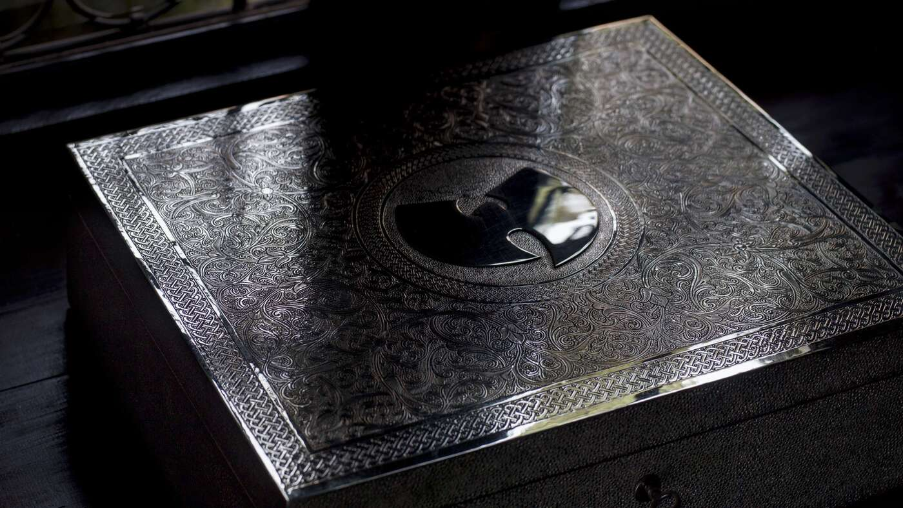
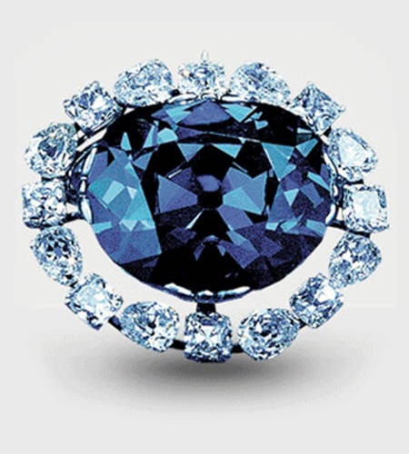

Random Things
Angry Cow
Elden Ring Clip
The Wakizashi
The Wakizashi is a japanese sword small in size, popularized by the legendary swordsman Musashi, who held it in his off hand as a side weapon
Learn MoreOne of a Kind Album
The East Coast US rap group Wutang Clan made an album with no copies called Once Upon a Time in Shaolin, this unheard music was obtained by the US Government and sold off to pay a debt owed
 Learn MoreThe Hope Diamond
The Hope Diamond first found in India was a massive gem with a long history, being passed around royalty in Europe it eventually ended up in the hands of the Smithsonian Museum and became a massive attraction
 Learn More